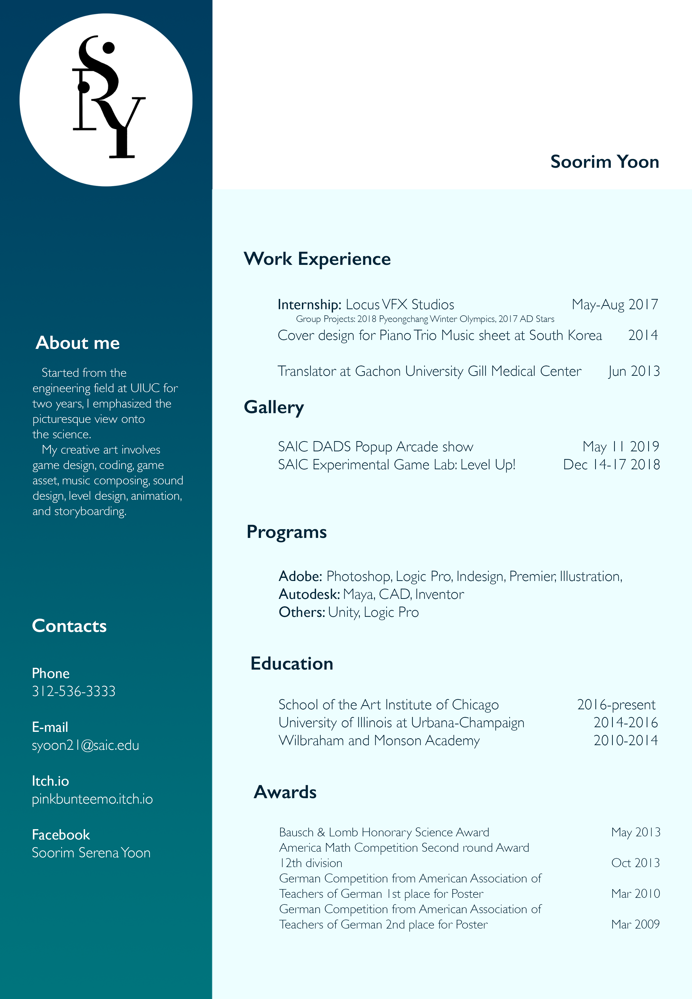

Soorim Yoon
As an independent game designer, I take a holistic approach to the game making process. This involves game design, coding, game asset, music composing, sound design, level design, animation, and storyboarding. Coming from an engineering background, my art practice is informed by scientific reasoning. The Unity game engine frames my illustrations, animations, and sounds to reflect my life. I use the aesthetic of fantasy to tell morally driven stories. My characters often reflect the relationships I have in real life. Since I was raised in South Korea, where the English is not the main language, my work tends to exclude dialog and reinforces the environment to communicate without language barriers. The games I make express my interest in re-creating the world with realistic physics.
